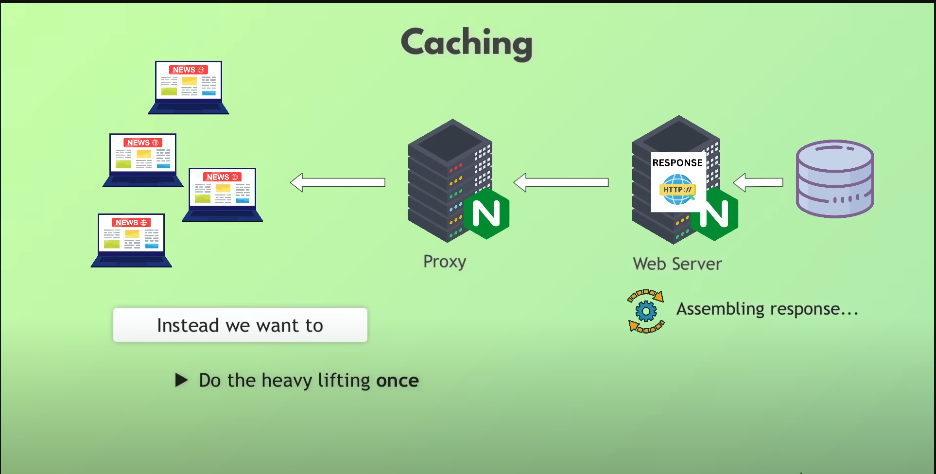
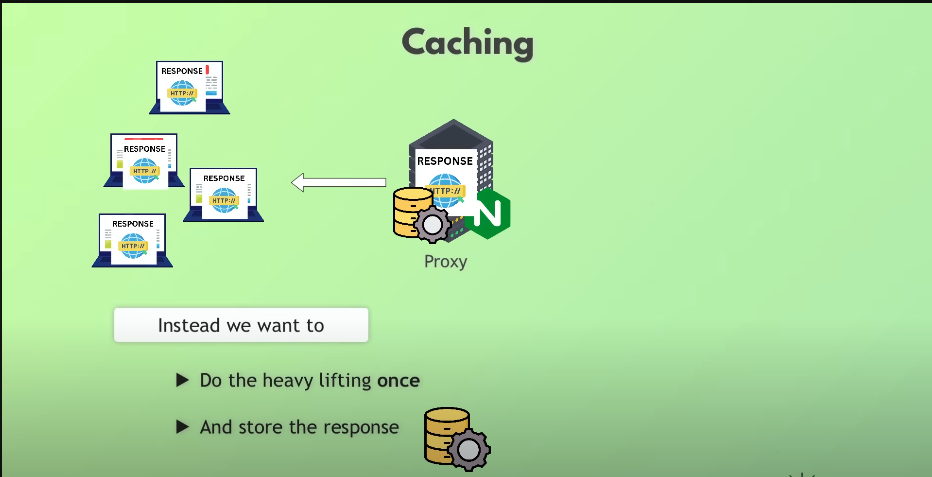

Introduction
Nginx is a powerful, high-performance web server and reverse proxy server that has gained immense popularity in recent years. Initially released in 2004 by Igor Sysoev, Nginx was designed to address the C10k problem—handling 10,000 simultaneous connections. It has since evolved into a versatile tool for modern web infrastructure. Nginx is widely known for its ability to handle a wide range of tasks, including serving static files, acting as a load balancer, functioning as a reverse proxy, and much more.
What sets Nginx apart is its event-driven, asynchronous architecture, which allows it to handle multiple requests simultaneously without consuming excessive system resources. This makes it an excellent choice for sites with high traffic and demanding performance requirements. Major organizations, including Netflix, Airbnb, and GitHub, rely on Nginx to power their web platforms.
In addition to its performance, Nginx offers a rich feature set. It supports HTTP/2, advanced caching mechanisms, and robust load balancing algorithms. Nginx is also highly extensible, with various modules that can be added to tailor its functionality to specific needs. This extensibility is one reason why Nginx is a popular choice in microservices and containerized environments like Kubernetes.
This article explores the key functionalities of Nginx, including its roles as a reverse proxy, forward proxy, and load balancer. It also delves into its capabilities in caching, compression for streaming, and security enhancements. Moreover, we’ll discuss how Nginx is used as an ingress controller in Kubernetes and its role in modern web security and encryption. By understanding these features, you can leverage Nginx to build scalable, secure, and efficient web applications.
Nginx Architecture:

Reverse Proxy
Nginx is widely used as a reverse proxy server, acting as an intermediary between clients and backend servers. When a client makes a request, Nginx forwards it to the appropriate server, processes the server’s response, and sends it back to the client. This approach provides several benefits, including load distribution, enhanced security, and improved performance.
As a reverse proxy, Nginx can shield backend servers from direct exposure to the internet, adding an extra layer of security. It also supports advanced traffic routing, enabling the distribution of requests based on factors such as server availability and URL patterns. This makes Nginx a vital component in modern application architectures, especially for microservices.
Reverse-proxy:

Forward Proxy
Nginx can also be configured as a forward proxy, enabling clients to access resources on the internet through the server. In this role, Nginx masks the client's IP address and provides features such as content filtering and caching. Forward proxies are often used in enterprise environments to enforce browsing policies or improve response times for frequently accessed resources.
By using Nginx as a forward proxy, organizations can monitor and control outbound traffic while benefiting from enhanced security and privacy. Additionally, forward proxies play a critical role in bypassing geographical restrictions or accessing resources that might otherwise be blocked in certain regions.
Forward Proxy:

Load Balancing
Load balancing is one of the most critical functionalities of Nginx. It efficiently distributes incoming traffic across multiple servers, ensuring high availability and reliability. Nginx supports several load balancing methods, including round-robin, least connections, and IP hash, allowing users to tailor the balancing strategy to their specific needs.
In addition to HTTP load balancing, Nginx can handle TCP and UDP traffic, making it suitable for a wide range of applications. Its ability to detect server failures and reroute traffic ensures seamless operation, even during server outages. This makes Nginx an indispensable tool for scaling modern applications.
Load Balancing:

Compression for Streaming
Nginx excels at optimizing content delivery through compression, particularly for streaming applications. By using gzip or Brotli compression, Nginx reduces the size of transmitted data, significantly improving streaming performance and reducing bandwidth usage. This is especially important for delivering video and audio content to users with limited bandwidth.
Compression not only enhances user experience but also reduces server load. Nginx can dynamically compress streaming data on the fly, ensuring compatibility with various devices and clients. This capability makes Nginx a preferred choice for content delivery networks (CDNs) and media streaming platforms.
compression-streaming:

Caching
Nginx provides robust caching mechanisms to accelerate content delivery. By caching frequently accessed resources, such as HTML pages, images, and scripts, Nginx reduces server load and improves response times. This makes it an excellent choice for high-traffic websites.
Nginx supports both static and dynamic content caching. It can be configured to cache responses from backend servers, ensuring that users receive content faster while conserving server resources. Advanced features like cache purging and control headers further enhance its capabilities.
caching:
 Security
Nginx plays a crucial role in enhancing web application security. It can protect backend servers from malicious traffic by filtering requests, blocking specific IP addresses, and rate-limiting connections. Nginx also supports Web Application Firewall (WAF) integration for added protection against common threats like SQL injection and cross-site scripting (XSS).
Additionally, Nginx provides SSL termination, allowing encrypted traffic to be securely decrypted at the server level. This reduces the load on backend servers while ensuring secure communication between clients and the application. Nginx's security features are a cornerstone of its popularity among enterprises.
Nginx_security:
Encryption
Encryption is a critical aspect of secure web communication, and Nginx supports the latest encryption protocols, including TLS 1.3. By enabling SSL/TLS, Nginx ensures that data transmitted between clients and servers remains confidential and protected from interception.
Nginx also supports advanced encryption techniques, such as elliptic curve cryptography (ECC), which offers strong security with lower computational overhead. Its flexibility in managing certificates, including automated renewal via tools like Certbot, simplifies the process of securing web applications.
Nginx_encrypt:
Nginx as a Kubernetes Ingress Controller
In Kubernetes environments, Nginx is widely used as an ingress controller to manage external access to services. An ingress controller facilitates HTTP and HTTPS routing to specific services based on defined rules, providing an entry point for client requests.
Nginx's integration with Kubernetes enables features like load balancing, SSL termination, and URL-based routing. These capabilities make it an ideal choice for managing complex microservices architectures while ensuring scalability and reliability.
Ingress Controller: